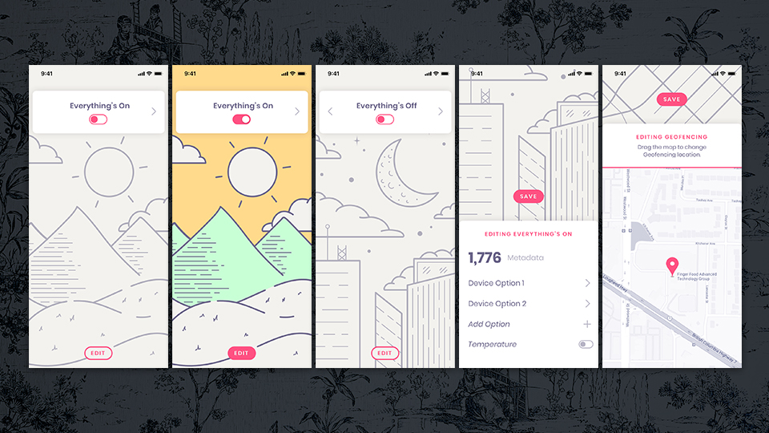

I always start any design project with my sketchbook. It gets ideas— both good and bad—out quickly, keeping me from solving the visual part of the problem before I'm ready. Sketches help me explore visual heirarchy and flow, and they're a critical step in my problem solving. I work through a lot of potential pitfalls as I draw, and I start developing a visual picture of how I want the product to start to feel.
After I've sketched both good and bad ideas, I review my work and choose the strongest options to continue to build out. I move to the computer and begin layout design. I think through spacing between components, colors, typography and navigation. I use placeholders for icons and images until I'm happy with the basic layout I have. I normally have a good mental picture of color schemes and visual feel before I move to the computer, but I do a lot of exploration and refinement as I build it out.
I like to use Sketch symbols during this process because it helps me make a lot of explorational changes quickly, but I don't spent a ton of time making sure things are aligned perfectly or named correctly—I won't use 80% of what I create in this phase anyways. Once I'm happy with what I have, I move on to the next concept. I'll come back to this design later and refine further, but I don't want to get too attached to any one design at this stage.
After I've explored one design direction, I go back to my sketches and choose another option I'd like to explore. From there I repeat the same process. Depending on the project this could take a few hours or a few weeks. I try to stretch the creative bounds of the project, thinking of as many different ways to solve the problem as I can.
In the example above I wanted the "scenes" (Everything's On, Everything Off, etc) to feel more special—I wanted the visual heirarchy to feel less like a list and more important. I explored a full-screen view for each "scene", with the ability to swipe between each scene. A simple line illustration for each scene adds to the visual interest and helps users have a visual reference as to where they are.
Once I've finished the exploration phase, I return to the concepts I feel are strongest and start to refine them. I sketch out the iconography I want, find images, and start fine-tuning typography. This is also where I start animating things—tap states, transition states, iconography, or anything else that might need animating.
Sometimes I'll offer more than one design solution during the early parts of a project, especially if the particular client doesn't have strong brand guidelines or was vague about the design requirements. Since I didn't have any brand guidelines for this exercise, I took some liberties about the brand.
My first solution stays fairly true to the wireframes provided. It fixes some of the smaller UX painpoints but is still a vertical list of options that you can edit.
I wanted this portion of the app to feel simple, quick to learn and easy to master. The color palette is simple, and the dark background helps the selected “scene” stand out. Since the visual language of the app is so simple, I wanted the iconography to have a bit more complexity. I kept the typography clean and simple throughout&since this portion of the app is about quickly editing, I didn't feel expressive typography was appropriate.
As I mentioned previously, this solution brings more expression into the “scene” selector view. A simple line illustration fills with color when the scene is selected, making it clear that it is active. The edit function is downplayed but still readily accesible.
Thank you for your time and for the consideration. You can find my portfolio, contact info and résumé at www.theLisSilent.com.
Oh, and if you'd like the Sketch files I can send them, but please keep in mind I had speed in mind when designing this exercise. My use of symbols, text styles and layer styles are lacking, because the focus of my time was on quick exploration.)